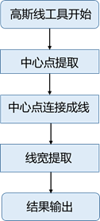
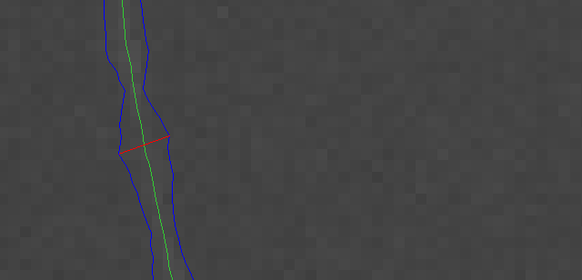
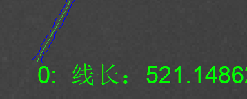
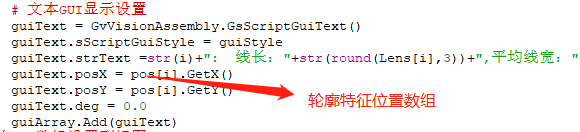

Phát hiện các khuyết tật dạng đường (line defect) trong ảnh, đồng thời đo và xuất ra thông tin quan trọng như chiều dài, chiều rộng của từng đường.
Phát hiện vết xước trên kính, vết nứt, vết rạn dạng đường thẳng hoặc cong.
Nguyên lý cơ bản của công cụ Gaussian Line được minh họa như sau:



Ví dụ script vẽ kết quả:

Không có
| Tên tham số | Mô tả tham số |
|---|---|
| Ảnh đầu vào | Ảnh cần phát hiện, chỉ hỗ trợ ảnh xám (grayscale). |
| Biến đổi tuyến tính 2D | Tịnh tiến, xoay, co giãn của đối tượng so với template. |
| Loại ROI | Vùng thực hiện phát hiện: Toàn ảnh / Hình chữ nhật / Hình tròn. |
| Chế độ tham số | Cơ bản hoặc Chuyên gia. – Cơ bản: chỉ điều chỉnh “Độ rộng đường phát hiện”, “Độ tương phản cao”, “Độ tương phản thấp”. – Chuyên gia: điều chỉnh trực tiếp “Sigma”, “Ngưỡng cao”, “Ngưỡng thấp”. |
| Độ rộng đường phát hiện | Tham số cơ bản. Ước lượng độ rộng khuyết tật (pixel). Dùng để tự động tính Sigma. Nếu đường có nhiều độ rộng khác nhau, lấy giá trị trung bình. Nếu chênh lệch quá lớn, nên tách riêng từng mức độ rộng để phát hiện. |
| Độ tương phản cao | Tham số cơ bản. Độ chênh lệch xám lớn nhất giữa đường và nền → dùng tính Ngưỡng cao. Phạm vi: [Độ tương phản thấp, 255]. |
| Độ tương phản thấp | Tham số cơ bản. Độ chênh lệch xám nhỏ nhất → dùng tính Ngưỡng thấp. Phạm vi: [0, Độ tương phản cao]. Nếu để 0 thì tự động lấy 1/3 Độ tương phản cao. |
| Sigma | Tham số chuyên gia. Hệ số làm mịn Gaussian. Đường càng rộng → Sigma càng lớn. Phạm vi khuyến nghị: [0.7, 20]. Gợi ý: 1, 1.2, 1.5, 1.8, 2, 2.5, 3, 4, 5. |
| Ngưỡng cao | Tham số chuyên gia. Điểm có đạo hàm bậc 2 > ngưỡng này chắc chắn thuộc đường. Phạm vi khuyến nghị: [0, 35]. Gợi ý: 0, 0.5, 1, 2, 3, 4, 5, 8, 10. |
| Ngưỡng thấp | Tham số chuyên gia. Điểm < ngưỡng này bị loại bỏ. Phạm vi khuyến nghị: [0, 20]. Gợi ý: 0, 0.5, 1, 2, 3, 4, 5, 8, 10. |
| Chế độ phát hiện | bar-shape / none. Chọn bar-shape để tự động hiệu chỉnh vị trí và độ rộng đối với đường không đối xứng (hai bên có độ tương phản khác nhau). |
| Chiều dài tối đa | Lọc bỏ đường dài hơn giá trị này (đặt “---” để không giới hạn). Phạm vi: [Chiều dài tối thiểu, 99999]. |
| Chiều dài tối thiểu | Lọc bỏ đường ngắn hơn giá trị này (đặt “---” để không giới hạn). Phạm vi: (0, Chiều dài tối đa]. |
| Chế độ sáng/tối | Đường sáng (bright line) hoặc Đường tối (dark line). |
| Có bật đo độ rộng không | Có/Không. Chọn “Có” để tính và xuất: Độ rộng trung bình, Độ rộng lớn nhất, Độ rộng nhỏ nhất. |
| Có bật nối đường không | Có/Không. Chọn “Có” để tự động nối các đoạn đường bị đứt. |
| Hiển thị vùng độ rộng | Có/Không. Chỉ có hiệu lực khi đã bật đo độ rộng. |
| Hiển thị vùng độ rộng lớn nhất | Có/Không. Chỉ có hiệu lực khi đã bật đo độ rộng. |
| Bật tính toán song song | Có/Không. Chọn “Có” để dùng OpenMP tăng tốc (có thể làm thời gian không ổn định). |
| Tỷ lệ số luồng | Phần trăm CPU dùng cho tính toán song song, phạm vi (0, 0.75] tức (0%, 75%]. |
| Tên tham số | Mô tả tham số |
|---|---|
| Ảnh đầu vào | Chiều rộng, chiều cao và kích thước pixel của ảnh đầu vào. |
| Số lượng kết quả | Số đường Gaussian đã phát hiện được. |
| Mảng vị trí đặc trưng đường | Tọa độ các điểm của từng đường Gaussian đã phát hiện. Dùng để vẽ/vị trí hóa kết quả lên ảnh gốc. |
| Mảng độ rộng trung bình | Độ rộng trung bình của từng đường Gaussian (cùng chỉ số với các mảng khác). |
| Mảng độ rộng lớn nhất | Độ rộng lớn nhất của từng đường Gaussian. |
| Mảng độ rộng nhỏ nhất | Độ rộng nhỏ nhất của từng đường Gaussian. |
| Mảng chiều dài đường | Chiều dài của từng đường Gaussian (pixel). |
| Đường Gaussian đã fit | Đối tượng đường Gaussian đã phát hiện, dùng để hiển thị trên view (thường màu xanh lá). |
| Vùng độ rộng đường | Vùng thể hiện độ rộng của đường, dùng để hiển thị trên view (thường màu xanh dương). |
| Vùng độ rộng lớn nhất | Vùng thể hiện đoạn có độ rộng lớn nhất, dùng để hiển thị trên view (thường màu đỏ). |
| Kết quả thực thi | Trạng thái thực thi của công cụ (OK/NG). |
| Thời gian thực thi | Thời gian công cụ chạy (ms). |
参见“\Samples\高斯线检测工具.gvp”。